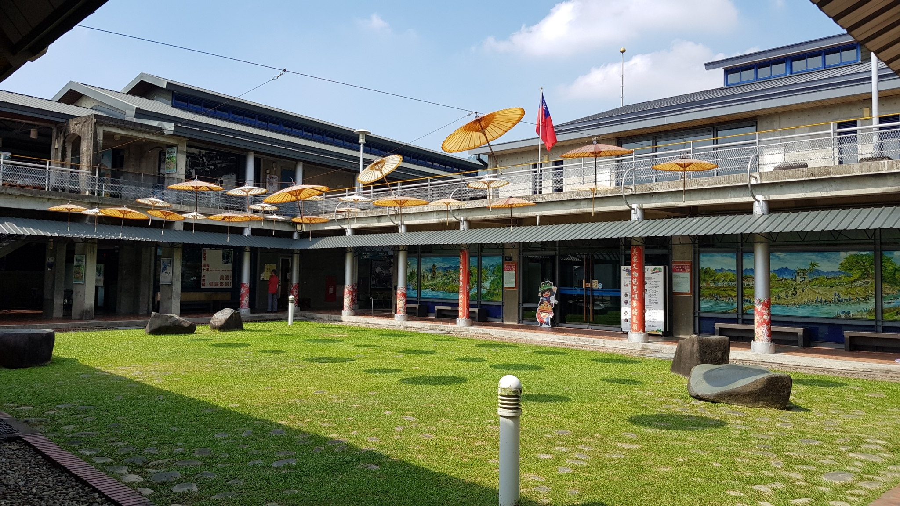

秋冬旅遊補助
9-12月最高省2000
美濃客家文物村
六堆，也是很熟的名詞，但很汗顏，總是沒很仔細的知道這兩個字下代表的意義。 如果純粹來美濃民俗村逛逛的話，因為園區約三、四百公尺，約規劃不用半天的時間即可逛完；如果有進行廣華興紙傘DIY的油紙傘、手拉坯、或客家擂茶等體驗時，時間規劃就必須拉長。 因為我們這次來美濃本來就想深入些，不只來這個比較著名的美濃民俗村，也進入美濃小鎮看看其他景點，所以就來這裡走走、讓小孩玩玩童玩，DIY類的都沒有嘗試，用眼睛看婆婆做油紙傘的功力，也算值回票價。 值回票價？其實美濃民俗村不用購票（free），就在進入美濃的必經道路上，無論開車到這裡停些休息無事散步，都值回票價。 總之，美濃民俗村完整保留客家文化，可說是美濃小鎮風情的縮影，街道中也介紹美濃的人文地理、生活習俗及豐富的旅遊內容，現場也有傳統手藝油紙傘製造，還有傳統客家美食館、美濃特產及客家鄉土小吃等美食，重點是不用門票，真是認識美濃和客家文化的好地方。
相關資訊
電話
07-681-8338
地址
843高雄市美濃區民族路49-3號
開放時間
09:00–17:00
票價資訊
免費